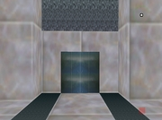
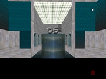
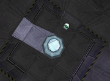
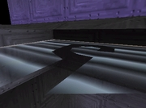
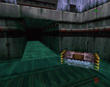
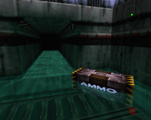
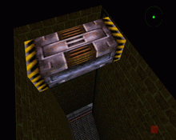

|
.
| Mysteres
de Perfect Dark : Battle |
| Autres
Niveaux de Goldeneye dans le Jeu |
Trois
Ans après la sortie de Goldeneye, Rare décida de reveler les fameux
Codes "à taper pendant le jeu" (Push-Button Codes) permettant
d'avoir les Codes facilement. Il semble que certains Codes de ce
type existent aussi dans Perfect Dark, comme les ont révelés les Membres
de Rare présents à l'E3-2000, mais pas uniquement pour avoir des
Codes du Style "Farsight XR-20", plutot pour avoir quelque
chose comme "Archives". C'est un des Mysteres les plus
Intriguants. |
| La
Porte du Niveau Grid |
Comme
pour l'Institut Carrington, c'est
une Porte menant à Rien. En fait, la Partie du Niveau ou se trouve cette
Porte fait plus que penser à Matrix. On retrouve l'Ascenseur, les
Piliers, meme la Texture. Il ne manque que le Détecteur de Métal ! Ci-dessous,
sur la Troisème Photo, je suis derrière la Porte, et l
n'y a rien ! |



| Le
Perfect Code |
Il
faut savoir que dans le Mode Battle, plus l'on joue et plus l'on
progresse en terme de Rang. Lorsque vous arrivez premier, on vous donne
en plus un Code
et un Username. Les
voici. On
trouve les mots Entropic, Decay, Zero et Tau. Tau est la 19eme lettre
de l'Alphabet Grec et pour Entropic (Entropie) je vous laisse chercher
dans le Dico. Signification
? Personne ne le sait. |
USERNAME: ENTROPICDECAY
PASSWORD: ZERO-TAU

| Perfect
Head |
A
l'Origine, lors du développement du jeu, on pouvait se photographier
avec le Game Boy Camera puis transférer son Visage pour l'appliquer
sur son Personnage de Battle. Ce Mode fut enlevé pour laisser (soi-disant)
la place aux Modes Co-Operative et Contre-Operative, officiellement
pour des raisons de Bugs... Mais la vraie version est que ce Mode fut
considéré comme "la Porte ouverte à toutes les Dérives meurtrières"
par des Firmes Parentales Américaines. Ah ces Américains... Ils laissent
les Armes en vente libre mais refusent de voir sortir un Jeu Vidéo où
l'on se flinguerait virtuellement la gueule avec nos VRAIES Têtes
dedans. Délicieux Pays ou le Paradoxe fusionne alegremment avec l'Hypocrisie
dans la Joie et les Dollars au Nom d'une Constitution Obsolète tenue
en laisse par des Grabataires Gluants. Ce Mode fut donc enlevé. Dommage, moi qui salivait déjà à l'idée de prunifier une Britney, un Jean-Marie ou tout simplement de créer des Personnages tirés d'Aliens, Predator ou Matrix quand ce n'est pas Bad Taste ou Les Monty Pythons... Bref ! De nombreuses Rumeurs courrent comme quoi les Programmeurs de chez Rare n'auraient pas TOTALEMENT enlevé ce Mode. Il l'auraient caché (comme pour le 24e Code de Goldeneye) et on pourrait l'Activer avec un Game Shark. |
Load
a Saved Head |
Charger une Tete Sauvée ! |
Make
a New Head |
Créer une nouvelle Tete ! |
Edit
a Loaded Head |
Editer une Tete Sauvée ! |
Edit
a Perfect Head |
Editer une Tete, ou une Perfect Tete ! |
Choose
Slot to Edit |
Choisir l'Endroit ou Editer ! |
Plus
loin vous trouverez les autres Informations cachées dans la Memoire
du Jeu... La Question est donc : Ce Mode est-il DEFINITIVEMENT enlevé
? Ou condamné ? On peut etre pessimiste en se rappellant que ce Mode
a été enlevé au profit des Modes Co-Operative et Contre-Operative ou
etre optimiste en se rappellant que Goldeneye fourmillait d'Options
enlevées, et récuperées grace à l'Action Replay. |
| Zones
Inaccessibles
|
Dans
le Niveau Warehouse (Entrepot) pour commencer.
Allez à l'Endroit ou il y a les Conduits d'Aération et regardez
en haut avec quelque chose qui voit à travers les murs. Ca devrait donner
ça : Il y a une Caisse de Munitions inaccessible. Avec le Game Shark,
on peut y acceder mais la Caisse ne peut etre prise. C'est un Décor
desormais, comme les Fromages. Figée à jamais pour l'éternité. Ci-dessous,
pleins de Photos ! |






Dans
les Egouts maintenant. Il y a 2 Caisses
dans le meme état. D'abord, dans le Sous-Sol ! On peut passer à
travers ces Caisses, ce sont juste un Décor, on ne peut pas les
prendre ! Et il n'y a rien au bout du Conduit Noir qui part dans Deux
Directions. |



Ci-dessous,
tout en Haut du Niveau, là où il y a l'echelle, encore
une Caisse-Décor ! Je vous laisse le soin de chercher
ces Caisses, vu qu'il n'y a besoin de rien pour les trouver.
Même en configurant le Niveau de sorte qu'il n'y ait AUCUNE
Arme, elles seront là, fidèles au poste. |


